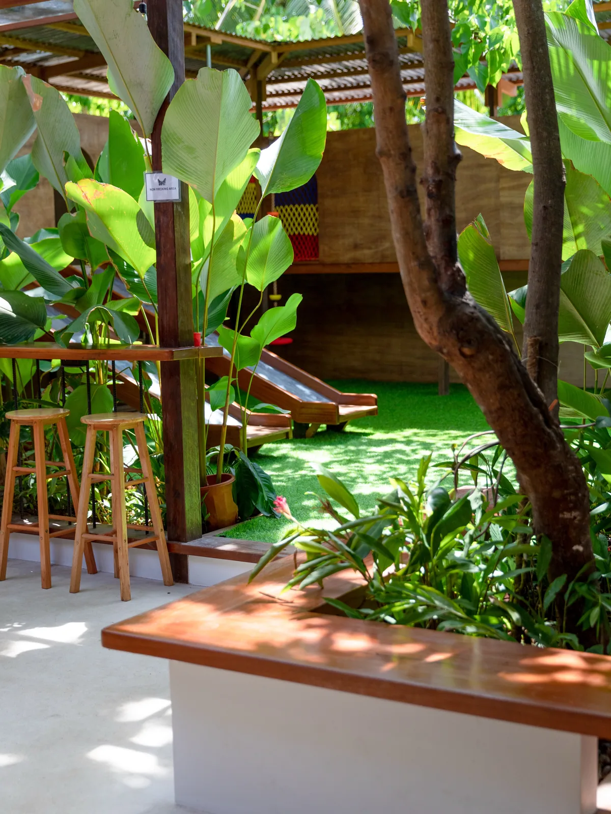
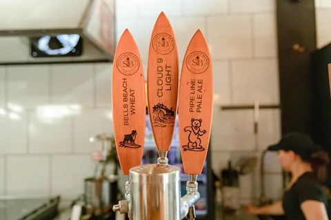

Where it runs and what it costs
Website and tools run in the Cloudflare account of The Cat & Gun, on the free plan.
Where it runs
Website and tools run in the Cloudflare account of The Cat & Gun, on the free plan. Cloudflare Pages holds the files of the website and the tools. Cloudflare Workers with their storage save drafts and publish changes.
The account belongs to the house. No part of the website or the tools runs on an account of Tasty Studios, and no service with an invoice is used.
This account does not exist yet. Until it does, the tools are built and tested on a local server, and the website opens at tastyrob123.github.io/the-cat-and-gun/website.
What it costs
As of 20 November 2026, from «The next steps for The Cat & Gun». Brand book editor, Sticker editor and Inquiries & chat run on the same free plan.
No AI, no keys
None of the tools uses AI. The chat answers only with what you entered. There is no key for an AI service anywhere in the tools.
Visitors counts with Cloudflare Web Analytics, without cookies and without names.
Help
For the website, the menu, the tools or the domain: robert@tasty-studios.de or WhatsApp +49 173 7230530. Tasty Studios replies the same day.
Lesson 04 of 04 · 0 of 4 read
The other lessons
Four lessons in text and pictures.

How the website is built
Six pages, made from finished files, with the photos, sentences and menu of The Cat & Gun.

How the website and the tools fit together
Each fact is kept in one place. Every change waits in a draft until you publish it.

The nine tools
What each tool is for, and the guide that shows it.